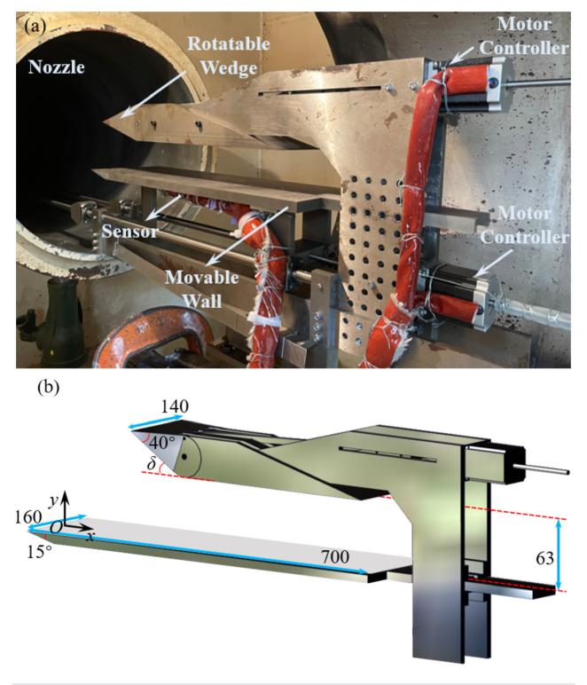
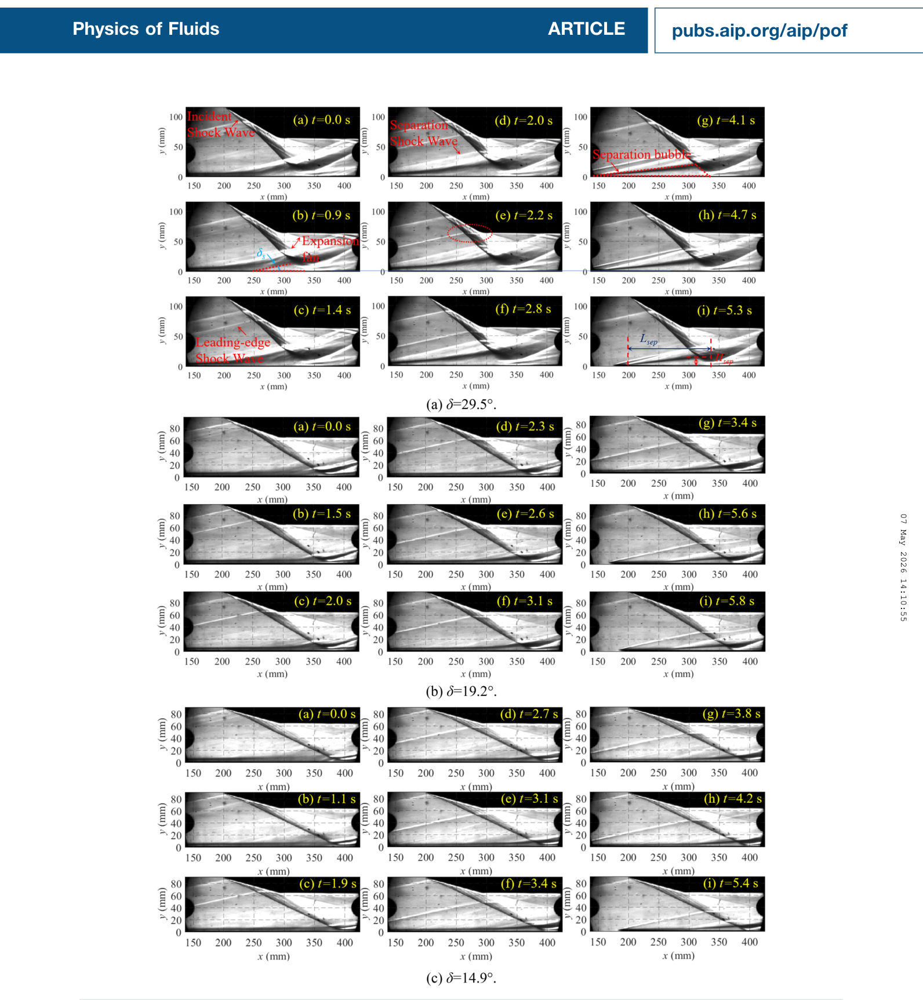
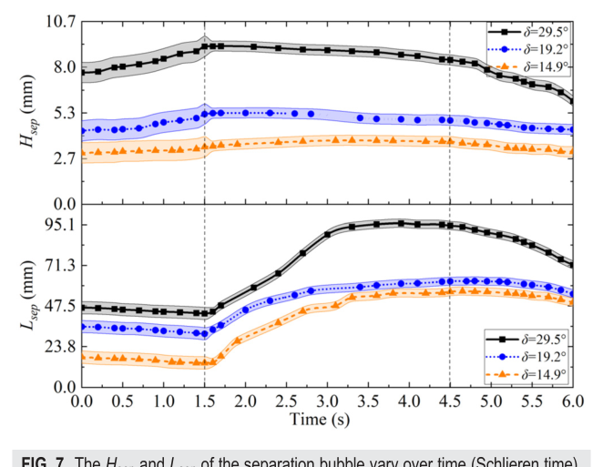
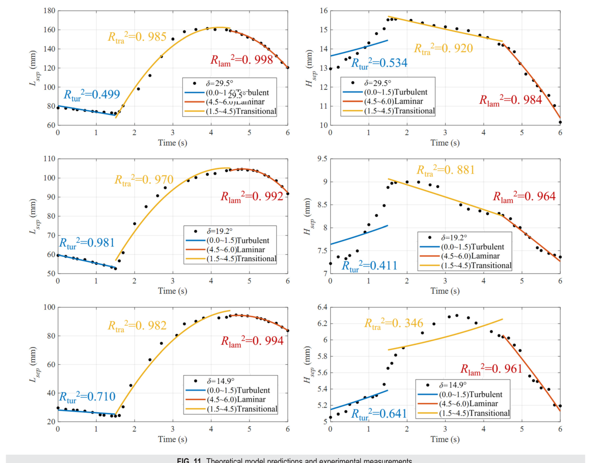

01中文摘要
在马赫5高超声速流动中，利用高速纹影和高频压力测量研究运动壁面对斜坡-平板构型分离区的影响。运动壁面改变分离泡长度和高度；楔与平板之间的流动演化以低频模态为主，高频模态反映前缘激波影响。运动壁面作用分为三个阶段：前两阶段由入射激波、分离激波与分离泡相互作用控制，第三阶段涉及前缘激波；运动壁面边界层状态不同导致前两阶段分离长度和高度趋势不同。平板各测点压力脉动趋势一致但持续时间和变化率不同。基于自由干扰理论和实验数据给出分离泡长度与高度时间演化模型。
原始摘要（英文/原文）
Shock Wave/Boundary Layer Interaction is a fundamental problem in hypersonic flows. This study investigates the influence of a moving wall on the flow separation region in a Mach 5 hypersonic flow using high-speed schlieren imaging and high-frequency pressure measurements. The results indicate that the moving wall alters the length and height of the separation bubble and reveal that low-frequency modes dominate the flow evolution between the wedge and the plate, and high-frequency modes capture the influence of the leading-edge shock. The moving wall’s influence has three distinct stages. The interaction among the incident shock, the separation shock, and the separation bubble governs the first two stages. The third stage involves the interaction with the leading-edge shock. The differing states of the boundary layer on the moving wall led to distinct trends in the evolution of separation length and height between the first and second stages. Pressure measurements show a consistent trend of pressure fluctuation at various locations on the plate, although the duration and rate of change differ. For a fixed wedge angle, these variations in pressure response are attributed to the different states of the boundary layer on the moving wall. Finally, this paper gives a theoretical model describing the temporal evolution of the separation bubble’s length and height based on the free interaction theory and experimental data. These findings offer new insights into controlling shock boundary layer interaction in highspeed flows through a moving wall.
02阅读说明
实验研究 + 理论建模（高速纹影、动态压力、DMD 与自由干扰理论分段模型）。Physics of Fluids 37, 116105 (2025)，共14页；bundle 全文完整（PAGE 1–14，含参考文献），已抓图11项。公式文本层 OCR 严重错位，已用 PDF 第9–12页逐式核对式(1)–(18)。原文存在两处需注意的内部不一致：①实验段写 M=6，而摘要、结论与 Fig.10 图注写 Mach 5；②p.8 对 Lsep/Hsep 的定义句与全文及 Fig.7 图注互换。图件可读性良好，信息完整度较高。 文章类型：期刊
03一句话核心与三句话摘要
M6、δ=14.9°–29.5° 下，移动壁使高超声速斜坡-平板分离泡呈线性—非线性—线性三阶段演化。
- 现有 SWBLI 控制手段（横向射流、等离子体、变形壁等）存在能量效率低、结构复杂或可靠性不足等问题；移动壁结构简单、可控，但其对高超声速分离泡几何与非定常演化的影响尚不清楚（p.2–3）。 AI概括
- 在斜坡-平板构型中，以来流 M=6（实验段表述）、偏转角 14.9°/19.2°/29.5°、移动壁速度 33.28 mm/s，用 5 kHz 纹影、1 MHz 动态压力与 DMD 测得：分离泡长度 Lsep 与高度 Hsep 经历线性—非线性—线性三阶段，低频模态主导、高频模态反映前缘激波影响（p.3–9）。 原文明确
- 移动壁边界层沿程由湍流→转捩→层流的状态变化是前两阶段演化差异的主因；基于自由干扰理论的分段模型在层流段 R²>0.961，但对湍流/转捩段泡高的预测明显较差（R² 可低至 0.346）（p.9–13, Fig.11）。 原文明确
04核心内容清单
| 要点 | 类型 | 重要性 | 原文依据 | 属性 |
|---|---|---|---|---|
| 移动壁使分离泡长度与高度经历三阶段：0.0–1.5 s 线性、1.5–4.5 s 非线性、4.5–6.0 s 再次线性。 | 主要结论 | A | p.8, Fig.7; p.2 摘要 | 原文明确 |
| 低频模态（2–4 阶）主导楔-板间流动演化；高频模态（5–8 阶）反映前缘激波的影响，且幅值随时间增长。 | 模态分析结论 | A | p.6–7, Fig.5–6; p.2 摘要 | 原文明确 |
| 第一阶段由入射激波、分离激波与分离泡的相互作用主导，呈强线性+弱非线性；第二阶段非线性迅速增强；第三阶段由前缘激波主导，呈分段线性。 | 机制 | A | p.7–8 §III.B | 原文明确 |
| 移动壁边界层沿程由湍流→转捩→层流，是前两阶段演化差异的主因；S1/S2/S3 分别对应层流/转捩/湍流。 | 机制/归因 | A | p.8–9 §III.C, Fig.9 | 原文明确 |
| δ=29.5° 时 Lsep 在 t≈2.8 s 前增大、之后减小，Hsep 同样先增后减；前缘激波与分离激波在 t=5.3 s 近乎合并。 | 现象 | A | p.4 §III.A, Fig.4 | 原文明确 |
| S1/S2/S3 压力变化趋势一致，但幅值、持续时间与变化率不同；第二次升压至峰值 S1 需 0.6 s，S2/S3 需 0.5 s。 | 定量结果 | A | p.8 §III.C, Fig.8 | 原文明确 |
| 偏转角越大分离泡越大；弱入射激波下第一阶段 Lsep 增长缓慢，只有激波强度达到一定水平泡几何才显著变化。 | 参数影响 | B | p.4, p.8 | 原文明确 |
| 基于自由干扰理论与实验数据的分段模型可刻画 Lsep(t)、Hsep(t)，层流段 R²>0.961，转捩段 Lsep R²=0.970–0.985，湍流段 Lsep R²=0.499–0.981。 | 模型验证 | A | p.10–12, Eqs.(17)(18), Fig.11 | 原文明确 |
| 模型对泡长的预测优于泡高：转捩段 Hsep R² 仅 0.346–0.920，湍流段 0.411–0.641。 | 模型局限 | A | p.12–13 | 原文明确 |
| 分离泡几何由纹影边缘灰度测量，每时刻重复 6 次取平均，误差带以阴影给出。 | 测量方法 | B | p.8 §III.B | 原文明确 |
| 移动壁速度 33.28 mm/s、最大行程 600 mm，激波入射点位置按 x_i(t)=x_i0−vt 变化，是理论模型的时间驱动量。 | 模型输入 | A | p.4 §II; p.9 Eq.(1) 前 | 原文明确 |
| 移动壁作为 SWBLI 控制手段具有结构简单、可靠性高、可控性强、可抑制分离的潜力，可减小分离区尺寸以降阻。 | 工程意义 | B | p.3; p.13 结论 | 原文明确 |
05引言：研究问题与领域缺口
SWBLI 广泛存在于高超声速飞行器内外流中，激波逆压梯度使边界层增厚、分离并形成分离泡，带来压力脉动、局部气动加热与结构载荷问题；分离与热流强耦合，转捩边界层的热流峰值可高于全湍流。除准定常结构与热载荷外，SWBLI 还有显著低频非定常性，与上游湍流边界层、转捩过程及分离泡对特定低频三维扰动的选择性放大有关。控制手段分为固定几何（横向射流、等离子体激励）与可变几何（变形壁、移动壁）两类；前者注入能量/动量但效率低、可能电磁干扰，后者通过改变局部表面几何或壁面运动来改变边界层状态。Szulc 等已把移动壁用于跨声速翼型并做二维数值研究，但移动壁对高超声速分离泡时空演化、压力响应与几何标度的作用缺乏实验认识。本文目标：用高帧频纹影与高频压力测量，刻画移动壁作用下分离泡长度/高度、流结构与非定常模态的三阶段演化，并用自由干扰理论建立可预测 Lsep(t)、Hsep(t) 的分段模型，为移动壁作为 SWBLI 控制手段提供依据（p.2–3）。
06流动条件与几何构型
| 项目 | 数值/描述 | 依据 | 备注 |
|---|---|---|---|
| 来流马赫数 M∞ | 实验段写 6；摘要、结论与 Fig.10 图注写 5（原文内部不一致，需回原文/原始记录确认） | p.4 §II; p.2 摘要; p.13 §IV; p.10 Fig.10 图注 | 本 JSON 以实验段 M=6 为主，同时保留 M=5 表述 |
| 总温 T0 | 499.3–525.7 K（随偏转角变化） | p.4 §II | |
| 总压 p0 | 680.4–720.02 kPa | p.4 §II | |
| 雷诺数 Re | 8.23×10^6–9.12×10^6（单位原文未注明；按量级应为单位雷诺数） | p.4 §II | |
| 偏转角 δ（工况1） | 29.5°（DMD、压力与理论模型主分析工况） | p.4, p.6, p.8, p.12 | |
| 偏转角 δ（工况2） | 19.2° | p.4, p.8, p.12 | |
| 偏转角 δ（工况3） | 14.9° | p.4, p.8, p.12 | |
| 激波发生器可调范围 | δ=0°–40°（步进电机驱动，可转楔） | p.4 §II | |
| 激波发生器前缘 | 展向宽 140 mm；后掠角 12°（避开前缘马赫锥对流场的干扰） | p.4 §II | |
| 移动壁几何 | 尖前缘；楔角 15°；有效长 700 mm；宽 160 mm | p.4 §II, Fig.1(b) | |
| 移动壁运动 | 恒速 33.28 mm/s，沿来流方向水平运动；最大行程 600 mm | p.4 §II | |
| 激波发生器与移动壁间距 | 63 mm（发生器下表面至移动壁上表面） | p.4 §II | |
| 坐标原点 | 初始时刻移动壁前缘中点；原点不随时间移动 | p.4 §II | |
| 纹影系统 | 双凹镜 Z 型；凹镜直径 300 mm；NAC HX-3 相机；5 kHz；曝光 50 µs | p.4 §II, Fig.2 | |
| 动态压力测量 | Kulite XTEL-190M；固有频率 300 kHz；精度 0.5% F.S.；采样 1 MHz；激励 ±15 V；输出 0–5 V；S1–S3 沿中线 | p.4 §II, Fig.3 | |
| 同步与延迟 | 同步器阶跃电压同步；压力采集相对纹影起始延迟 0.4/0.3/0.4 s | p.8 §III.C | |
| 记录时长 | 纹影与压力均 6.0 s；DMD 快照采样 500 Hz | p.6, p.8 | |
| 边界层状态 | 移动壁沿程依次为层流、转捩、湍流（引自先前研究并示于 Fig.9） | p.8–9 §III.C, Fig.9 | |
| 几何维度 | 二维（作者明确忽略三维效应） | p.9 §III.C 末 | |
| 壁温/热流 | 文中未提及（无壁温控制或热流测量描述） | p.3–4 | |
| 来流湍流度/噪声 | 文中未提及 | p.3–4 |
07核心现象与关键参数
| 参数 | 定义 | 数值 | 关系/说明 | 依据 |
|---|---|---|---|---|
| 分离泡长度 Lsep | 分离泡最大水平长度（但 p.8 有一句把 Lsep 写成最大垂直高度，与全文及 Fig.7 图注互换，需核对） | δ=29.5° 时约数十 mm 增至约 160 mm 量级；δ=19.2°、14.9° 更小（Fig.11 纵轴 20–180 mm，数值为图面估读） | 三阶段随时间变化；δ 越大越大 | p.4, p.8, Fig.7, Fig.11 |
| 分离泡高度 Hsep | 分离泡最大垂直高度（同上，p.8 定义句与全文互换） | δ=29.5° 时约 12.5–15.5 mm；δ=19.2° 约 7.4–9.3 mm；δ=14.9° 约 5.2–6.3 mm（Fig.11 图面估读） | 与 Lsep 同阶段变化，但第二阶段先出现强非线性 | Fig.11, p.12 |
| 三阶段时间界 | 线性/非线性/线性阶段的划分时刻 | 0.0–1.5 s；1.5–4.5 s；4.5–6.0 s | 与模态 2、3/4、5–8 的时间系数转折对应 | p.8 §III.B, Fig.7 |
| 激波入射点位置 x_i(t) | 移动壁坐标系中入射激波与壁面交点位置 | x_i(t)=x_i0−vt，v=33.28 mm/s | 理论模型的时间自变量 | p.9 Eq.(1) 前 |
| 标度指数 n | Lsep M∞^n/x_i ∝ P_r/P∞ 中的 Mach 数指数 | 尖前缘 n=3.37；一般依赖边界层状态与前缘钝度 | 式(1)(2) | p.9 |
| Chapman–Rubesin 常数 C | 层流长度标度中的参考焓/温度修正常数 | 冷壁取 1.2 | 式(3)–(7) 中的 C^0.5 | p.9 |
| 峰值压力 P_r | 流动下游峰值压力（由传感器测得） | 文中未给出具体数值；以 P_r/P∞ 进入式(1)(2)(8)–(10) | 湍流与层流长度标度的压力比参数 | p.9–10 |
| 起始分离压力 P_inc | 边界层在激波入射点开始分离所需的初始分离压力 | 按自由干扰取 P_inc≈P∞+0.5ρ∞U∞²C_f（文中未给具体数） | 式(3)–(7) | p.9 |
| 模型常数 | K、K_t、C_h、C_up、K_αL、C_st、k_s 等 | 均由实验数据确定，文中未列出具体数值 | 分别进入式(2)(8)(12)–(18) | p.9–11 |
| 决定系数 R² | 模型预测相对实验值的拟合优度 | 层流段 >0.961；转捩段 Lsep 0.970–0.985、Hsep 0.346–0.920；湍流段 Lsep 0.499–0.981、Hsep 0.411–0.641 | 用于评价式(17)(18) | p.12, Fig.11 |
| 压力上升至峰值耗时 | 第二次压力上升从开始到峰值的时间 | S1 0.6 s；S2/S3 0.5 s（δ=29.5°） | 反映不同位置边界层状态差异 | p.8 §III.C |
08方法与数据
模型（Fig.1）：可转楔形激波发生器由步进电机驱动，偏转角 δ=0–40°；前缘展向宽 140 mm、后掠 12° 以避开前缘马赫锥干扰；移动壁为尖前缘平板，楔角 15°、有效长 700 mm、宽 160 mm，由高精度步进电机以 33.28 mm/s 恒速水平驱动，最大行程 600 mm；激波发生器下表面与移动壁上表面间距 63 mm；坐标原点固定在移动壁前缘中点，不随时间移动。测量：双凹镜 Z 型纹影，凹镜直径 300 mm，NAC HX-3 高速相机，帧率 5 kHz、曝光 50 µs；Kulite XTEL-190M 动态压力传感器，固有频率 300 kHz、精度 0.5% F.S.、激励 ±15 V、输出 0–5 V，采样 1 MHz，S1–S3 沿移动壁中线布置（Fig.3）；同步器用阶跃电压同步相机与压力采集，压力相对纹影起始分别延迟 0.4/0.3/0.4 s。来流：实验段称 M=6，T0=499.3–525.7 K，p0=680.4–720.02 kPa，Re=8.23×10^6–9.12×10^6（单位未注明）；但摘要、结论与 Fig.10 图注写 Mach 5，存在内部矛盾。分析：对 6.0 s 稳定流场以 500 Hz 采样的纹影快照做 DMD，取前 8 阶模态，分析特征值、能量占比与时间系数；分离泡几何由快照中泡边缘灰度变化测量，每时刻重复 6 次取平均，阴影表示测量误差带。理论：以自由干扰理论、Katzer 层流长度标度、湍流动量厚度幂律和转捩加权平均构建 Lsep(t)、Hsep(t) 分段模型，模型常数由实验数据确定。文中明确忽略三维效应，仅关注二维流动现象（p.9）。
| 项目 | 内容 | 依据 | 备注 |
|---|---|---|---|
| 构型 | 可转楔形激波发生器 + 尖前缘移动壁的斜坡-平板构型；发生器与壁面间距 63 mm | p.4 §II, Fig.1 | |
| 移动壁驱动 | 高精度步进电机，恒速 33.28 mm/s，最大行程 600 mm | p.4 §II | |
| 高速纹影 | Z 型双光路，300 mm 凹镜，NAC HX-3，5 kHz，50 µs 曝光 | p.4 §II, Fig.2 | |
| 高频压力 | Kulite XTEL-190M，300 kHz 固有频率，0.5% F.S.，1 MHz 采样，S1–S3 | p.4 §II, Fig.3 | |
| 同步 | 同步器以阶跃电压同时触发相机与压力采集，并标定 0.4/0.3/0.4 s 延迟 | p.8 §III.C | |
| DMD | 6.0 s 稳定流场、500 Hz 快照，前 8 阶模态；分析特征值、频率-能量、时间系数与空间模态 | p.6, Fig.5–6 | |
| 分离泡几何测量 | 基于纹影快照中泡边缘灰度变化；每时刻测 6 次取平均；阴影为误差带 | p.8 §III.B | |
| 理论建模 | 自由干扰理论 + Katzer 层流标度 + 湍流动量厚度幂律 + 转捩加权平均 + 前缘激波线性修正 | p.9–12, Eqs.(1)–(18) | |
| 验证 | 用实验 Lsep/Hsep 时间序列拟合模型常数并计算 R²；按层流/转捩/湍流分段评价 | p.12, Fig.11 | |
| 不确定度 | 仅给出几何测量误差带与传感器精度 0.5% F.S.；纹影判读、重复性、来流参数不确定度未系统给出 | p.4, p.8 |
09核心推导与公式
以自由干扰理论为骨架，把分离泡长度/高度写成“入射点位置 x_i(t)、来流 Mach 数、峰值/来流压力比、边界层厚度”的函数：层流用 Katzer 长度标度并叠加前缘激波线性项，湍流用动量厚度幂律，转捩段取层流与湍流的加权平均；最后按移动壁边界层状态的时间顺序拼成分段函数。时间演化完全由 x_i(t)=x_i0−vt 驱动。
关键假设
- 二维流动，忽略三维效应（作者明确声明）
- 高超声速大分离泡 Lsep≫δ，可用自由干扰/大分离泡标度
- 边界层在入射点处依次经历湍流、转捩、层流三种状态，各段可用相应标度描述
- 转捩段可用层流与湍流结果的线性加权平均近似，权重由当地 Re_x 在转捩区间中的位置确定
- 冷壁、Chapman–Rubesin 常数 C=1.2；层流 δ*≈1.72x/√Re_x，湍流 δ*≈0.016x/Re_x^0.2
- 前缘激波对层流干扰区的影响随时间线性增长，用 (C_st+k_s) 线性因子表示
- 模型常数（K、K_t、C_h、C_up、K_αL、C_st、k_s）由实验数据标定
推导过程
作者引用 Sriram & Jagadeesh 的高超声速大分离泡标度，把分离长度写成入射点位置、来流 Mach 数与峰值/来流压力比的幂律；指数 n 与比例常数取决于边界层状态和前缘钝度，尖前缘取 n=3.37。
层流采用 Katzer 关系（式3）：δ_i* 为入射点边界层厚度，M_i、Re_xi 为入射点 Mach 数与雷诺数，C 为 Chapman–Rubesin 常数（冷壁 1.2），P3 为激波反射后压力，Pinc 为起始分离压力。再代入 δ_i*≈1.72x_i/√Re_xi 与自由干扰关系 Pinc≈P∞+0.5ρ∞U∞²Cf，得到式(4)(5)。
取 M_i≈M∞、P_i≈P∞、x_i=x_i0−vt，得式(6)；实验显示前缘激波对层流干扰区也有线性作用，故再乘 (C_st+k_s)，得式(7)。
湍流时用分离长度与入射点动量厚度 θ_i、压力比 P_r/P∞ 的幂律（式8），取 θ_i≈0.036x_i/Re_xi^0.2 得式(9)；再用 ν∞=μ∞/(ρ∞U∞)、x_i=x_i0−vt 展开，得式(10)。
转捩段取层流与湍流结果的加权平均，权重 α=(Re_x−Re_turb)/(Re_lam−Re_turb)，其中 Re_turb、Re_lam 为平板转捩前后的当地雷诺数（式11）；泡高同理（式16）。
由自由干扰与边界层理论设 Hsep=C_hδ_s*（式12），δ_s* 取上游影响起点 x_s=x_i−L_up 处的边界层厚度，L_up=C_upδ_i*M_i³/√Re_xi；层流取 δ*≈1.72x/√Re_x、湍流取 δ*≈0.016x/Re_x^0.2，分别得式(13)(15)（湍流式14为中间式）。
按 t≥t_laminar（第三阶段，层流）、t_turbulent<t<t_laminar（第二阶段，转捩）、t≤t_turbulent（第一阶段，湍流）把三段结果拼成分段函数，得到式(17)(18)，即本文最终理论模型。
适用边界：模型是半经验的：常数全部由本文实验标定，未给出不确定度；仅适用于二维、单一壁速 33.28 mm/s、δ=14.9°–29.5°、约 6 s 的过程；层流段依赖 Katzer 标度与冷壁 C=1.2，湍流/转捩段用简单加权，未显式包含膨胀波、三维效应、壁温与热流；泡高预测在转捩/湍流段较差（R² 最低 0.346），作者认为泡高受更复杂机制控制。
10结果：主要发现与关键证据
流结构（Fig.4）：δ=29.5° 时 t=0 流场已建立，干扰区由入射激波、膨胀扇、三角分离泡与分离激波组成；移动壁向下游运动使前缘激波逐步靠近分离泡，改变 Lsep、Hsep 与气动楔角 δs；t=2.2 s 前缘激波与入射激波相互作用并影响膨胀扇，t=4.1 s 两激波进一步接近，t=5.3 s 干扰区被压缩、分离激波与前缘激波近乎合并。δ=19.2°、14.9° 趋势相似但泡更小；δ 越大泡越大。沿 x 方向 Lsep 在 t≈2.8 s 前增大、之后减小，Hsep 同样先增后减（p.4）。DMD（δ=29.5°，Fig.5–6）：特征值位于单位圆上或内，模态稳定或周期；模态 1 为零频静态模态、能量最高；模态 2 低频、能量次高，时间系数线性下降；模态 3/4 为共轭对，低频高能，系数呈“增—减—再增”的强非线性；模态 5–8 频率更高、能量较低，系数高度非线性且幅值随时间增长。模态 2 主要含入射激波、分离激波与分离泡，前缘激波影响弱；模态 3/4 表明 δs 成为主导特征；模态 5–8 反映前缘激波靠近后高频成分增强。结论：低频模态主导楔-板间流动演化，高频模态刻画前缘激波影响（p.6–7）。几何三阶段（Fig.7）：0.0–1.5 s 线性、1.5–4.5 s 非线性（Hsep 先强非线性而 Lsep 仍线性）、4.5–6.0 s 再次线性；与模态 2 的线性、模态 3/4 的非线性、模态 5–8 的后段线性相对应。压力（Fig.8）：S1/S2/S3 趋势一致但幅值、持续时间与变化率不同；δ=29.5° 时 S3 在压力时间轴 t=1.8 s 位于泡内 x=251.6 mm，t=2.4 s 已到泡下游 x=346.6 mm；第二次压力上升至峰值耗时 S1 为 0.6 s、S2/S3 为 0.5 s；压力记录 6.0 s，起点用红点标记，采集相对成像延迟 0.4/0.3/0.4 s（p.8）。作者把 S1/S2/S3 分别对应层流/转捩/湍流边界层，并归因于移动壁沿程边界层状态差异（p.8–9）。理论模型（Fig.11）：层流段 R² 均 >0.961（Lsep 0.992–0.998，Hsep 0.961–0.984）；转捩段 Lsep R²=0.970–0.985、Hsep R²=0.346–0.920；湍流段 Lsep R²=0.499–0.981、Hsep R²=0.411–0.641。模型对长度的刻画明显优于高度（p.12–13）。
| 发现 | 证据 | 证据类型 | 强度 | 位置 | 属性 |
|---|---|---|---|---|---|
| 移动壁使分离泡长度与高度经历线性—非线性—线性三阶段，时间界约为 1.5 s 与 4.5 s。 | Fig.7 的 Lsep/Hsep 时间序列；与 Fig.5(c) 模态 2/3-4/5-8 的时间系数转折对应；摘要与结论均明确三阶段 | 纹影几何测量 + DMD | 强 | p.8 §III.B, Fig.7; p.2 摘要 | 原文明确 |
| 低频模态主导楔-板间流动演化，高频模态反映前缘激波影响。 | DMD：模态 1 静态、模态 2 低频次高能、模态 3/4 低频高能共轭对；模态 5–8 高频、后段幅值增长；Fig.6 空间模态显示模态 2 主要为入射激波/分离激波/分离泡 | DMD 模态分析 | 强 | p.6–7, Fig.5–6; p.2 摘要 | 原文明确 |
| 第一、二阶段由入射激波—分离激波—分离泡相互作用主导；第三阶段由前缘激波主导，流动呈分段线性。 | 模态 2 的线性系数、模态 3/4 的非线性系数、模态 5–8 后段线性；Fig.4 中前缘激波在 t=5.3 s 与分离激波近乎合并 | 模态—流场对应 | 强 | p.7–8 §III.B; p.4 | 原文明确 |
| 移动壁边界层由湍流→转捩→层流的状态变化，是前两阶段演化差异的主因。 | Fig.9 的沿程层流/转捩/湍流分区；S1/S2/S3 压力响应差异；作者引用文献 7、35 的边界层状态研究 | 压力数据 + 文献类比 | 中 | p.8–9 §III.C, Fig.8–9 | 原文明确 |
| 不同测点的压力变化趋势一致，但幅值、持续时间与变化率不同；δ=29.5° 时 S1 第二次升压至峰值需 0.6 s，S2/S3 需 0.5 s。 | Fig.8 三条压力时序；S3 在 t=1.8 s 位于泡内 x=251.6 mm、t=2.4 s 到泡下游 x=346.6 mm | 高频压力测量 | 强 | p.8 §III.C, Fig.8 | 原文明确 |
| 偏转角越大分离泡越大；弱入射激波下第一阶段 Lsep 增长缓慢。 | δ=29.5° 的泡明显大于 19.2°、14.9°；三段 Lsep 曲线对比 | 多工况对比 | 中 | p.4, p.8; Fig.4, Fig.11 | 原文明确 |
| 基于自由干扰理论的分段模型能较好刻画层流段的 Lsep/Hsep 动态，层流段 R²>0.961。 | Fig.11 层流段拟合曲线与实验点；Lsep R²=0.992–0.998，Hsep R²=0.961–0.984 | 模型—实验对比 | 强 | p.12, Fig.11 | 原文明确 |
| 模型对泡长的预测优于泡高，转捩/湍流段泡高预测明显较差（R² 最低 0.346）。 | 转捩段 Hsep R²=0.346–0.920；湍流段 Hsep R²=0.411–0.641；作者归因于泡高受膨胀波等更复杂机制影响 | 模型误差分析 | 强 | p.12–13, Fig.11 | 原文明确 |
11机制解释与论证链
移动壁恒速向下游运动，使激波入射点在移动壁坐标系中按 x_i(t)=x_i0−vt 向前缘方向移动，入射点依次扫过湍流、转捩、层流边界层（Fig.9），从而把一次实验变成一次“边界层状态扫描”。第一阶段（湍流）：入射点位于湍流区，湍流边界层对干扰区的影响相对弱，入射激波、分离激波与分离泡的耦合以强线性+弱非线性为主，Lsep/Hsep 近似线性、变化率低。第二阶段（转捩）：入射点进入转捩区，转捩边界层对逆压梯度更敏感，非线性迅速增强，Hsep 先出现强非线性而 Lsep 仍近似线性。第三阶段（层流）：入射点进入层流区，同时前缘激波已逼近分离激波，前缘激波以恒速逼近、影响随时间线性增强，故 Lsep/Hsep 又回到线性；t=5.3 s（δ=29.5°）两激波近乎合并。DMD 与之一致：模态 2（入射激波+分离激波+分离泡，低频高能）线性衰减/变化，模态 3/4（δs 主导）强非线性，模态 5–8（前缘激波相关高频）后段线性且幅值增长。压力响应趋势在各测点一致而持续时间/变化率不同，作者归因于 S1/S2/S3 处边界层状态（层流/转捩/湍流）不同（p.6–9）。【AI推断】“边界层状态扫描”是本文三阶段划分的几何本质，作者用 x_i(t) 与 Fig.9 表述，但未直接测量入射点处的边界层剖面来逐时验证状态序列。
12讨论：结论、贡献与局限
原文机制链：移动壁恒速下游运动→激波入射点在壁面坐标系中向上游（前缘方向）移动，x_i(t)=x_i0−vt→入射点依次扫过湍流、转捩、层流边界层→前两阶段由入射激波、分离激波与分离泡的相互作用主导，第三阶段由前缘激波与分离激波/泡的相互作用主导。第一阶段（湍流）湍流边界层对干扰区影响相对弱，Lsep/Hsep 近似线性、变化率低；第二阶段（转捩）转捩边界层影响增强，出现强非线性、高变化率；第三阶段（层流）前缘激波以恒速逼近，影响随时间线性增强，故又回到线性。压力响应趋势一致而持续时间/变化率不同，被归因于 S1/S2/S3 处边界层状态不同。模型部分：层流用 Katzer 标度并叠加前缘激波线性项，湍流用 θ_i 幂律，转捩用层流/湍流加权平均；层流段预测最好，湍流/转捩段泡高预测差，作者认为泡高变化涉及更复杂机制（如膨胀波对 SWBLI 的影响），留待后续研究。局限：仅二维、单一壁速、三个偏转角、6 s 记录；无边界层直接测量（状态引自先前研究与 Fig.9 示意）；无摩阻/热流/气动力测量；模型常数均由实验拟合，未给不确定度（p.9, p.12–13）。
作者结论
在斜坡-平板构型中，移动壁会改变高超声速分离泡的长度与高度，其影响可分为三个明显阶段：第一、二阶段由入射激波、分离激波与分离泡的相互作用主导，第三阶段由前缘激波参与并主导。DMD 表明低频模态主导楔-板间流动演化，高频模态反映前缘激波影响；模态系数呈“近似线性—非线性—近似线性”的耦合过程。移动壁边界层状态由湍流经转捩到层流的变化，是前两阶段演化特征差异的主因；不同测点压力趋势一致而持续时间/变化率不同，也归因于沿程边界层状态差异。基于自由干扰理论与实验数据建立的 Lsep(t)、Hsep(t) 分段模型，在层流段预测精度高（R²>0.961），在湍流/转捩段对泡高的预测较差，说明泡高变化涉及更复杂机制。研究为移动壁控制 SWBLI 提供了实验与理论参考，并指出可通过主动控制移动壁来调节分离区尺寸、减小阻力、改善飞行器气动性能（p.13）。
主要贡献
- 用 5 kHz 纹影 + 1 MHz 动态压力 + DMD，实验刻画了移动壁作用下高超声速斜坡-平板分离泡几何的三阶段时空演化。
- 识别出低频模态（入射激波/分离激波/分离泡）主导、高频模态（前缘激波）表征后段影响的模态结构，并把模态时间系数与几何三阶段对应起来。
- 提出移动壁边界层“湍流→转捩→层流”状态扫描是阶段差异主因的机理解释，并用三点压力响应差异佐证。
- 基于自由干扰理论、Katzer 层流标度、湍流动量厚度幂律与转捩加权，建立了可预测 Lsep(t)、Hsep(t) 的分段半经验模型，并给出分段 R² 评价。
- 把移动壁作为一种结构简单、可控的 SWBLI 控制手段引入高超声速分离泡控制，并讨论其降阻潜力。
局限与未解决问题
作者承认：忽略三维效应，只关注二维现象；理论模型在湍流/转捩段对泡高预测较差，泡高涉及膨胀波等更复杂机制，需后续研究。 【AI识别】仅一个壁速 33.28 mm/s、三个偏转角、约 6 s 记录，未做速度/间隙/前缘钝度的参数扫描；无边界层剖面、壁面摩阻、热流或气动力直接测量，“边界层状态扫描”主要依据文献与 Fig.9 示意，未在入射点处逐时实测；压力传感器仅 3 个、沿中线布置，空间分辨率有限；模型常数全部由本文数据拟合且未给不确定度，外推性未知；来流 M 在文中写作 5 与 6 两种，若实际马赫数不一致会影响标度指数与模型系数；纹影几何判读受灰度阈值影响，虽重复 6 次但未给判读不确定度。
13对高速流动与工程的意义
对高速流动工程：移动壁提供了一种不向流场注入质量/能量、结构相对简单且可控的 SWBLI 控制途径；本文表明分离泡几何对壁面运动高度敏感，且响应分三阶段、与移动壁自身边界层状态强耦合，因此工程上若用移动壁调节进气道隔离器或控制面附近的分离区，需要按当地边界层状态分段设计控制律，而不能假设线性响应（【AI推断】）。方法上，纹影几何测量 + DMD + 分段自由干扰建模的组合可用于其他动态几何/壁面运动干扰研究；其“层流段模型好、湍流/转捩段泡高差”的结论提示后续需补充膨胀波、三维与热流效应。不能回答：三维有限宽效应、其他壁速与间隙、真实飞行 Re/壁温下的定量规律、移动壁的能耗/驱动功率与净减阻收益、分离泡非定常频率的绝对标度（文中只给模态相对能量与频率排序，未给具体 St）。
14核心图件




15可引用原文素材
| 原文短句 | 可支持的观点 | 位置 | 使用建议 |
|---|---|---|---|
| “The moving wall's influence has three distinct stages.” | 三阶段是全文核心结论 | p.2 摘要 | 开篇引用 |
| “low-frequency modes dominate the flow evolution between the wedge and the plate” | 低频模态主导 | p.2 摘要 | DMD 结论引用 |
| “The transition of the moving wall boundary layer state is the primary cause” | 边界层状态变化是阶段差异主因 | p.8 §III.C | 机制归因引用 |
| “the incident shock first interacts with the turbulent boundary layer” | 第一阶段为湍流态 | p.9 §III.C 末 | 说明状态扫描顺序 |
| “the theoretical model is more accurate in characterizing the dynamic changes in the bubble's length than in its height” | 模型对长度的预测优于高度 | p.12 | 模型局限引用 |
| “this study neglects three-dimensional effects and focuses primarily on the two-dimensional flow phenomena” | 二维假设 | p.9 §III.C 末 | 局限性引用 |
| “by actively controlling the interaction ... the size of the separation zone can be controlled, thereby reducing drag” | 移动壁控制的工程潜力 | p.13 结论 | 工程意义引用 |
| “These findings offer new insights into controlling shock boundary layer interaction in high-speed flows through a moving wall.” | 全文贡献定位 | p.2 摘要 | 总结性引用 |
16最终核验
| 核验项 | 结论 |
|---|---|
| 仅基于全文 | 是——只使用 bundle 全文、图注与 PDF 第9–12页的公式核对；未引入外部文献或教科书推导，模型公式均按原文式(1)–(18)转写。 |
| A 级要点有依据 | 是——A 级要点均对应摘要、§III、§IV、Fig.4/7/8/11 或式(17)(18)的具体页码与式号。 |
| 属性标注 | 是——three_sentence、core_points、findings 均标注【原文明确】【AI概括】【AI推断】；机制段中未经直接测量的“状态扫描”几何解释已标 AI推断。 |
| 覆盖范围 | bundle 14 页全文读完至 EOF（含参考文献）；11 项图件全部可读；公式文本层错位，已用 PDF 第9–12页逐式核对式(1)–(18)，未核对实验装置照片细节。 |
| 无编造 | 是——页码、图号、式号、角度、速度、R² 均取自原文；Fig.11 中未在正文给出的 Lsep/Hsep 数值仅作“图面估读”并明确标注；模型常数原文未给数值，未编造。 |
需回原文确认
- 来流马赫数究竟是 5 还是 6？实验段写 M=6，摘要、结论与 Fig.10 图注写 Mach 5；这直接影响 n=3.37 标度与 Re 的对应关系。
- p.8 将 Hsep 定义为“最大水平长度”、Lsep 定义为“最大垂直高度”，与全文及 Fig.7 图注互换；应以哪一句为准？
- S3 在压力时间轴 t=1.8 s 位于 x=251.6 mm、t=2.4 s 位于 x=346.6 mm，0.6 s 内位移 95 mm，与壁速 33.28 mm/s 不一致；压力时间轴/坐标原点/触发延迟的定义需核对。
- 雷诺数 8.23×10^6–9.12×10^6 的单位（每米还是无量纲基于模型长度）原文未注明。
- 正文给出的 R² 范围（如湍流段 Lsep 0.499–0.981）未包含 Fig.11 中 δ=14.9° 的 0.710、Hsep 的 0.534 等值，统计口径需确认。
- 模型常数 K、K_t、C_h、C_up、K_αL、C_st、k_s 的具体取值未列出，无法独立复现预测。
- 边界层“湍流→转捩→层流”的状态序列依据文献 7、35 与 Fig.9 示意，未在入射点处逐时实测；该归因的强度需实验剖面验证。
- 压力归一化写为“动态压力除以无流动时段的平均压力”，具体参考压力与单位需核对。
17关联文献
依据标签、板块、构型与作者脉络自动关联，可据此追踪同一问题的前序与后续工作。
18引用格式
选择期刊风格后复制；出处保留原刊名。BibTeX 可直接用于 LaTeX。
引用格式
Jiao, Y. et al. 2025 Experimental investigation of the effects of a moving wall on the separation bubble in a hypersonic ramp–flat plate configuration. Physics of Fluids 37 (11), 116105. https://doi.org/10.1063/5.0296257
PDF上传 PDF 并更新本页
本页缺少全文、摘要或图件时，可在浏览器本地补入 PDF。解析完全在本机完成，不上传网络；完成后会更新本页的 PDF 打开链接、原摘要、IMRaD 机器抽取、关键句与含图页面。复杂的公式语义与中文深度解读仍以原文和既有精读记录为准。